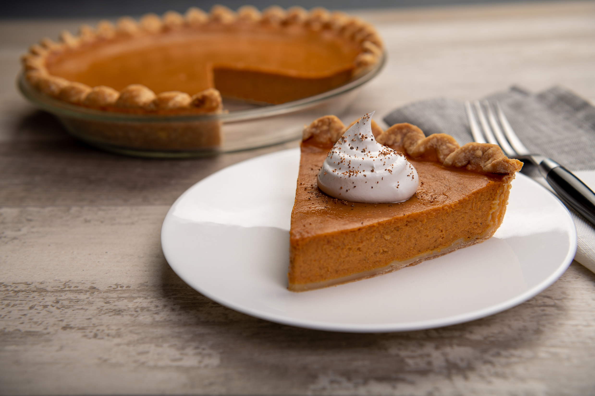

Perfect Pumpkin Pie
Your search for the perfect pumpkin pie ends here!
 |
 |
|
Ingredients Needed:
- 1 (15 ounce) can pumpkin puree
- 1 (14 ounce) can EAGLE BRAND® Sweetened Condensed Milk
- 2 large eggs
- 1 teaspoon ground cinnamon
- ½ teaspoon ground ginger
- ½ teaspoon ground nutmeg
- ½ teaspoon salt
- 1 (9 inch) unbaked pie crust
Servings: 8
Instructions:
- Preheat the oven to 425 degrees F (220 degrees C).
- Whisk pumpkin puree, condensed milk, eggs, cinnamon, ginger, nutmeg, and salt together in a medium bowl until smooth. Pour into crust.
- Bake in the preheated oven for 15 minutes.
- Reduce oven temperature to 350 degrees F (175 degrees C) and continue baking until a knife inserted 1 inch from the crust comes out clean, 35 to 40 minutes.
- Let cool before serving.